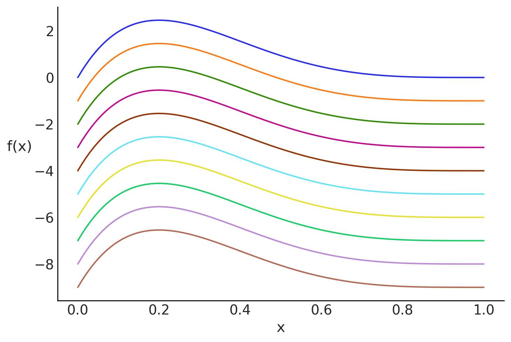
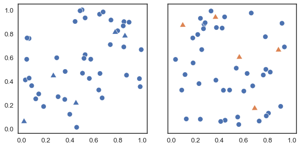
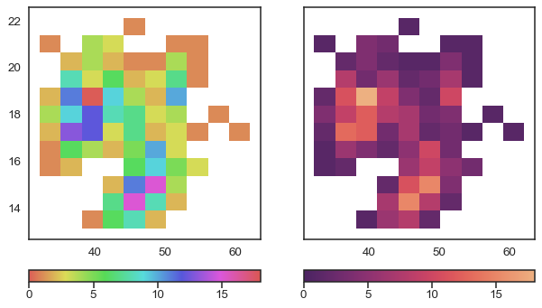
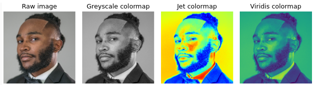
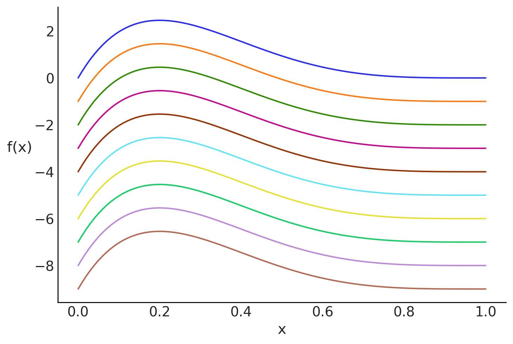

az.style.use('arviz-white')
x = np.linspace(0, 1, 100)
dist = pz.Beta(2, 5).pdf(x)
fig = plt.figure()
for i in range(10):
plt.plot(x, dist - i, f'C{i}', label=f'C{i}')
plt.xlabel('x')
plt.ylabel('f(x)', rotation=0, labelpad=15);
Plots occupy a central place in modern statistics, both in exploratory data analysis and inferential statistics.
Data visualization has an aesthetic and a scientific component. The challenge usually is to generate nice-looking graphics without losing the rigor and veracity of what you want to show. In this chapter, we will focus on the scientific component, but we will also give some tips on how to make the graphics look good.
Data visualization is a very broad area with graphical representations targeting very different audiences ranging from scientific papers for ultra-specialists to newspapers with million readers. We will focus on scientific visualizations and in particular visualizations useful in a Bayesian setting, but some of the principles we will discuss are general and can be applied to other types of visualizations.
Humans are relatively good at processing visual information, as a consequence data visualization is both a powerful tool for analyzing data and models and a powerful tool to convey information to our target audience. Using words, tables or just numbers is generally less effective to communicate information compared with visualizations. Nevertheless, our visual system can be fooled, as you may have experienced with visual illusions. The reason is that our visual system is not a perfect measurement device. Instead, it has been evolutionary-tuned to process information in ways that tend to be useful in natural settings and this generally means not just seeing the information, but interpreting it as well. Put less formally, our brains guess stuff and don’t just reproduce the outside world. Effective data visualization requires that we recognize the abilities and limitations of our visual system.
Using visualization to deceive third parties should not be the goal of an intellectually honest person, and you must also be careful not to deceive yourself. For example, it has been known for decades that a bar chart is more effective for comparing values than a pie chart. The reason is that our perceptual apparatus is quite good at evaluating lengths, but not very good at evaluating areas. Figure 1.1 shows different visual elements ordered according to the precision with which the human brain can detect differences and make comparisons between them Cleveland and McGill (1984).

Human eyes work by essentially perceiving 3 wavelengths, this feature is used in technological devices such as screens to generate all colors from combinations of 3 components, Red, Green and Blue. This is known as the [RGB] color model](https://en.wikipedia.org/wiki/RGB_color_model). But this is not the only possible system. A very common alternative is the CYMK color model, Cyan, Yellow, Magenta, and blacK.
To analyze the perceptual attributes of color, it is better to think in terms of Hue, Saturation and Lightness, HSL is an alternative representation of the RGB color model.
The hue is what we colloquially call “different colors”. Green, red, etc. Saturation is how colorful or washed out we perceive a given color. Two colors with different hues will look more different when they have more saturation. And the lightness corresponds to the amount of light emitted (active screens) or reflected (impressions), ranging from black to white:
Varying the tone is useful to easily distinguish categories as show in Figure 1.2.

In principle, most humans are capable of distinguishing millions of tones, but if we want to associate categories with colors, the effectiveness to distinguish them decreases drastically as the number of categories increases. This happens not only because the tones will be increasingly closer to each other, but also because we have a limited working memory. Associating a few colors (say 4) with categories (countries, temperature ranges, etc) is usually easy. But unless there are pre-existing associations, remembering many categories becomes challenging and this exacerbates when colors are close to each other. Requiring us to continually alternate between the graphic and the legend or text where the color-category association is indicated. Adding other elements besides color such as shapes can help, but in general it will be more useful to try to keep the number of categories relatively low. In addition, it is important to take into account the presentation context, if we want to show a figure during a presentation where we only have a few seconds to dedicate to that figure, it is advisable to keep the figure as simple as possible. This may involve removing items and displaying only a subset of the data. While if the figure is part of a text, where the reader will have the time to analyze for a longer period, perhaps the complexity can be somewhat greater.
Although we mentioned before that human eyes are capable of distinguishing three main colors (red, green, and blue), the ability to distinguish these 3 colors varies between people, to the point that many individuals have difficulty distinguishing some colors. The most common case occurs with red and green. This is why it is important to avoid using those colors. An easy way to avoid this problem is to use colorblind-friendly palettes. We’ll see later that this is an easy thing to do when using ArviZ.
Varying the lightness as in Figure 1.3 is useful when we want to represent a continuous scale. With the hue-based palette (left), it’s quite difficult to determine that our data shows two “spikes”, whereas this is easier to see with the lightness-modifying palette (right). Varying the lightness helps to see the structure of the data since changes in lightness are more intuitively processed as quantitative changes.

One detail that we should note is that the graph on the right of Figure 1.3 does not change only the lightness, it is not a map in gray or blue scales. That palette also changes the hue but in a very subtle way. This makes it aesthetically more pleasing and the subtle variation in hue contributes to increasing the perceptual distance between two values and therefore the ability to distinguish small differences.
When using colors to represent numerical variables it is important to use uniformly perceptual maps like those ofered by matplotlib or colorcet. These are maps where the colors vary in such a way that they adequately reflect changes in the data. Not all colormaps are perceptually uniform. In fact, obtaining them is not trivial. Figure 1.4 shows the same image using different colormaps. We can see that widely used maps such as jet (also called rainbow) generate distortions in the image. In contrast viridis, a perceptually uniform color map does not generate such distortions.

A common criticism of perceptually smooth maps is that they appear more “flat” or “boring” at first glance. And instead maps like jet, show greater contrast. But that is precisely one of the problems with maps like jet, the magnitude of these contrasts does not correlate with changes in the data, so even extremes can occur, such as showing contrasts that are not there and hiding differences that are truly there.
To convey visual information we generally use shapes, including lines, circles, squares etc. These elements have properties associated to them like, position, shape and color.
ArviZ use both matplotlib and bokeh as plotting backends. While for basic use of ArviZ is not necessary to know about these libraries, being familiar with them is useful in order to better understand some of the arguments in ArviZ’s plots and/or to tweak the defaults plots generated with ArviZ. If you need learn more about these libraries we recommend the oficial tutorials for matplotlib and bokeh.
Matplotlib allows users to easily switch between plotting styles by defining style sheets. ArviZ is delivered with a few additional styles that can be applied globally by writing az.style.use(name_of_style) or inside a with statement.
az.style.use('arviz-white')
x = np.linspace(0, 1, 100)
dist = pz.Beta(2, 5).pdf(x)
fig = plt.figure()
for i in range(10):
plt.plot(x, dist - i, f'C{i}', label=f'C{i}')
plt.xlabel('x')
plt.ylabel('f(x)', rotation=0, labelpad=15);
az.style is just an alias of matplotlib.pyplot.style, so everything you can do with one of them you can do with the other.
The styles arviz-colors, arviz-white, arviz-darkgrid and arviz-whitegrid use the same color-blind friendly palette. This palette was designed using https://colorcyclepicker.mpetroff.net/. If you need to do plots in grey-scale we recommend to restrict yourself to the first 3 colors of the arviz default palette (“C0”, “C1” and “C2”), otherwise you may need to use different line styles or different markers. Another useful palette when the number of colors is restricted is the grayscale which assigns greys to the first four colors (“C0”, “C1”, “C2” and “C3”) and the ArviZ’s blue to “C5”. Check the style gallery to see all the available ArviZ’s styles.